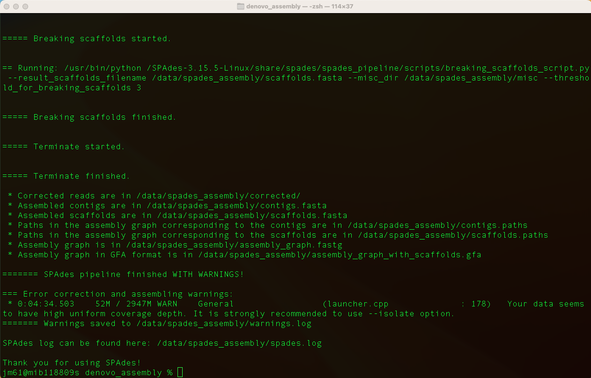
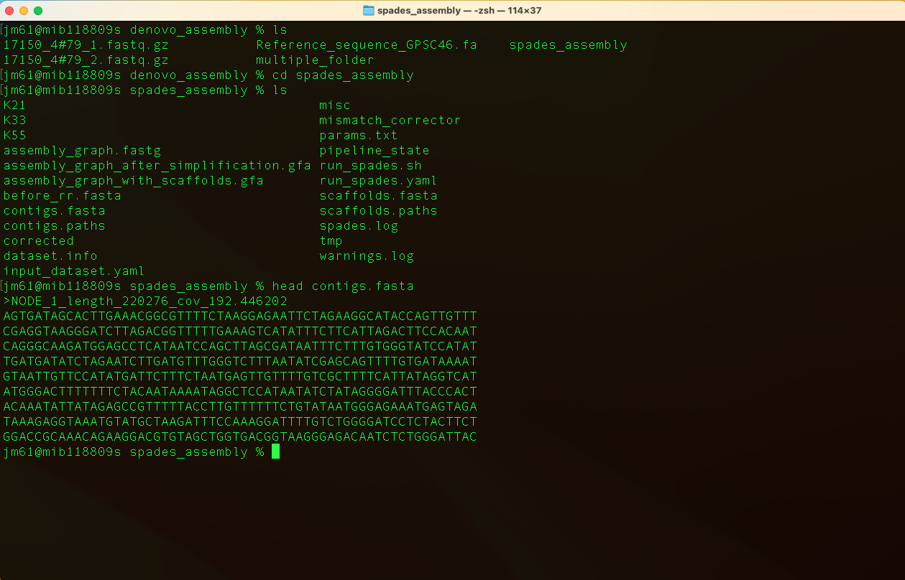

Before you being this section, navigate to the denovo_assembly folder. You will use this folder and its contents to learn and practice this section.
Overview
After generating sequencing reads and carrying out quality assessment, the next step is to determine how the reads fit together by looking for overlaps between them; this process is called genome assembly.
The data from the Illumina machine comes as relatively short stretches (35 - 150 base pairs) of DNA – around 6 billion of them. These individual sequences are called sequencing reads. There are a range of assembly programs that have been specifically designed to assemble genomes from sequence reads data. Genome assembly using sequence reads of around 100bp is complicated due to the high frequency of repeats longer than the sequence read length in genomes, for example: IS elements, rRNA operons; and the massive amount of data the programs have to handle. In addition to finding overlaps in the sequence, the assembly programs can also use information from the predicted insert size where paired reads are used, to link and position reads in an assembly.
Where a genome is pieced together without any reference sequence to compare it to, or scaffold it against, it is termed a de novo assembly. De novo assembly may not produce complete genomes but will be fragmented into multiple contiguous sequences (contigs), the order of which is arbitrary, and does not necessarily bear not any relation to their real order in the genome.
Where a closely related reference sequence is available, it is possible to improve an assembly by ordering the contigs in comparison to the reference, and also transferring annotation. In this case, nearly all of the genome will be present, i.e. genes and features, but there will be some regions that will contain gaps, or contigs that will not be accurately placed, because they are not present in the reference used. Although technically incomplete, ordered genome assemblies can provide valuable insights into the genetics and biology of an organism.
Tool(s)
In this section we will use SPAdes which is one of a number of de novo assemblers that use short read sets as input (e.g. Illumina Reads), and the assembly method is based on de Bruijn graphs.
You can download SPAdes tool from a docker repository using the command:
docker pull staphb/spades
Generating a de novo assembly for a single strain
We will assemble the genome of Streptococcus pneumoniae strain 17150_4#79 (accession number: ERR1065718). Run the command in terminal to execute SPAdes:
docker_run staphb/spades spades.py -1 17150_4#79_1.fastq.gz -2
17150_4#79_2.fastq.gz --careful --cov-cutoff auto -o
spades_assembly
An explanation of this command is as follows:
docker_run: is a function to start a container. The function includes the following flags: docker run --rm=True -u $(id -u):$(id -g) -v $(pwd):/data "$@". To understand the docker_run function read the section [Data and Computational Platforms (Docker)]
staphb/spades: is the docker image
spades.py: is the tool
-1: flag for the input file of forward reads
-2: flag for the input file of reverse reads
--careful: minimizes mismatches and short indels
--cov-cutoff auto: computes the coverage threshold (rather than the default setting, “off”)
-o: flag for the the output directory
Once SPAdes has finished running, you will see the output,

Move into the output directory (spades_assembly) and look at the contigs.fa file usimg the command:
head contigs.fasta

Generating a de novo assembly for a multiple strains
We can also assemble genomes of multiple strains. Navigate to the multiple_files folder and carry out the steps below.
Step 1: We will first create a folder for each pair of compressed fastq files and named after the strain id using the command:
for x in *1.fastq.gz; do mkdir ${x%%_1.fastq.gz} ; mv $x
${x%%_1.fastq.gz}; mv ${x%%1.fastq.gz}2.fastq.gz ${x%%_1.fastq.gz};
done
An explanation of this command is as follows:
for x in *1.fastq.gz; do: This starts a loop where x takes on the value of each file that matches the pattern "*1.fastq.gz" in the current directory.
mkdir ${x%%_1.fastq.gz}: This creates a directory using the prefix of the file name (i.e., removes "_1.fastq.gz" from the end of the file name).
mv $x ${x%%_1.fastq.gz}: This moves the file with "1.fastq.gz" to the directory created in the previous step.
mv ${x%%1.fastq.gz}2.fastq.gz ${x%%_1.fastq.gz}: This moves the corresponding "2.fastq.gz" file to the same directory.
Here's a brief explanation of the ${x%%_1.fastq.gz} syntax:
${x}: This refers to the value of the variable x.
%%: This is a pattern removal operator
_1.fastq.gz: This is the pattern to be removed.
So, ${x%%_1.fastq.gz} removes the trailing "_1.fastq.gz" from the value of x.
Step 2: We will then execute SPAdes using the command:
for x in *#* ; do docker_run staphb/spades spades.py --pe1-1
$x/${x}_1.fastq.gz --pe1-2 $x/${x}_2.fastq.gz --careful --cov-cutoff auto
-o $x"_output"; done
An explanation of this command is as follows:
for x in *#* ; do: This initiates a loop, iterating over files or directories with names containing #.
docker_run staphb/spades: This indicates that you are using a Docker container (staphb/spades) to run the SPAdes genome assembler.
spades.py --pe1-1 $x/${x}_1.fastq.gz --pe1-2 $x/${x}_2.fastq.gz --careful --cov-cutoff auto -o $x"_output": These are the SPAdes command-line options:
- spades.py: The SPAdes command itself.
- --pe1-1 $x/${x}_1.fastq.gz: The path to the first paired-end FASTQ file.
- --pe1-2 $x/${x}_2.fastq.gz: The path to the second paired-end FASTQ file.
- -careful: Activates the "careful" mode, which can be useful for low-coverage datasets.
- --cov-cutoff auto: Automatically sets the coverage cutoff.
- -o $x"_output": Specifies the output directory for the SPAdes assembly.
We will use contigs generated from this section to complete Section Four (detecting AMR genes using ABRicate).
Quiz
Navigate to the s.agalactiae folder. Explore the content of this
folder and carry out:
de novo assembly for a single strain
de novo assembly for multiple strains